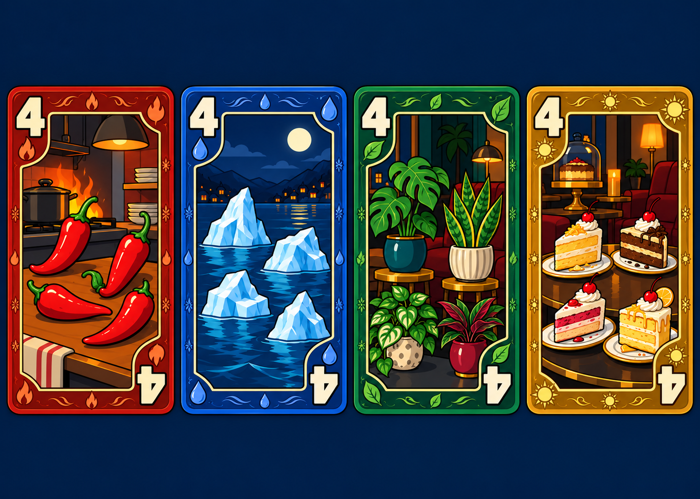
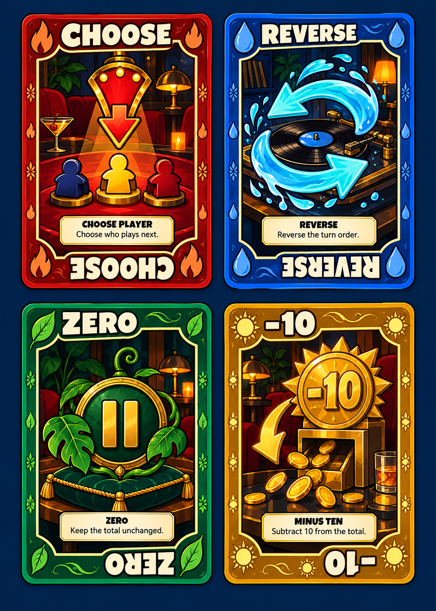

100next · Midnight Social Club
A new look for the cards
First design concepts: bold cartoon objects, rich suit colors, and clear action symbols. The final cards will share a consistent playing-card shape and readable corner indices.
Number cards
Four chilies, four icebergs, four plants, four cake slices. Everyday objects make the value easy to count. Descriptions appear only on special cards.

Fire · Water · Leaf · Sun
Special cards
Each action keeps a large symbol visible in the illustration, alongside a short explanation.

CHOOSE PLAYERChoose who plays next.
REVERSEReverse the turn order.
ZEROKeep the total unchanged.
−10Subtract 10 from the total.